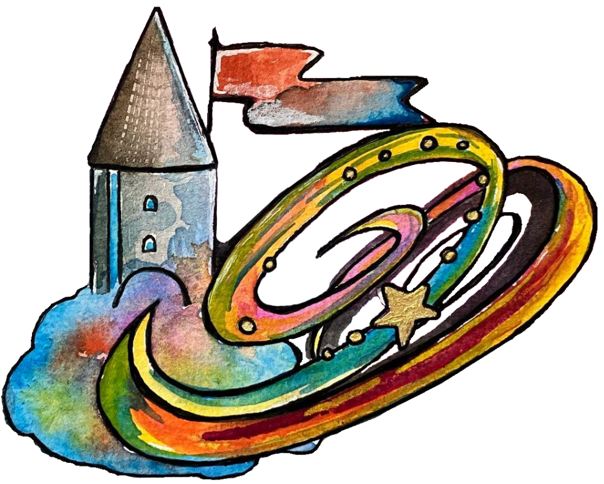

Håck ma's Castle
Beim Schloss in Ottenschlag (irgendwo am Land in Österreich, etwa eine Stunde von St. Pölten entfernt) hat sich ein temporaler Riss geöffnet. Hier treffen Håcker*innen und Magie aufeinander. Durch diesen Riss verschwimmen die Grenzen zwischen Drinnen und Draußen, Camp und BarCamp, Hackathon und Slackathon. Also Håck ma’s Castle!
28. August bis 1. September 2024
Schloßgasse
3631 Ottenschlag
Österreich
Weitere Infos folgen. Wenn du uns frühzeitig etwas mitteilen möchtest: kontakt(ät)hack-mas.at